Design & Art
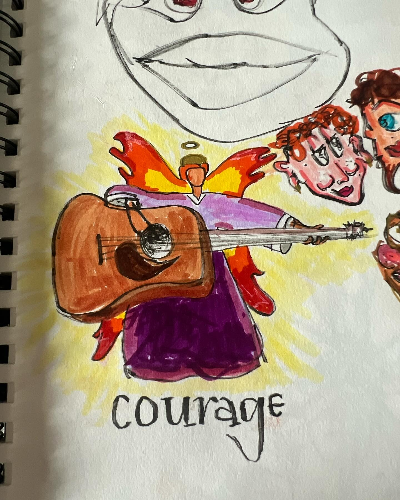
I've been drawing in sketchbooks for a while now. It's mostly just a way to mess around with markers and see what comes out — I don't plan much, I just start drawing.
My style is kind of loose and cartoonish. I like exaggerated faces, bold colors, and weird characters. A lot of my drawings end up being figures or portraits.
Below is a gallery of some of my sketchbook pages. These are all done with markers and pen.
Sketchbook Gallery
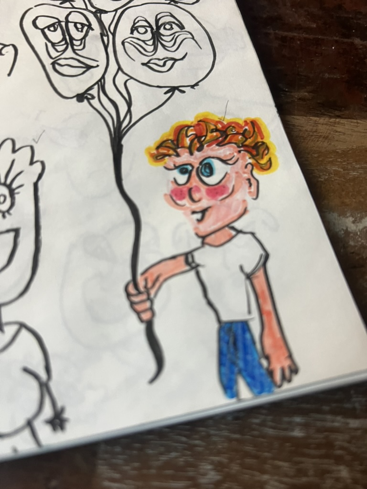
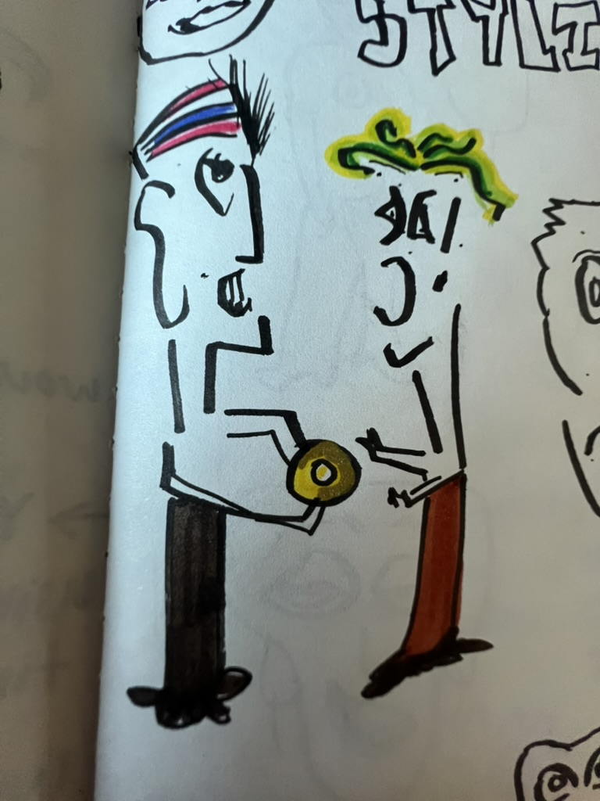
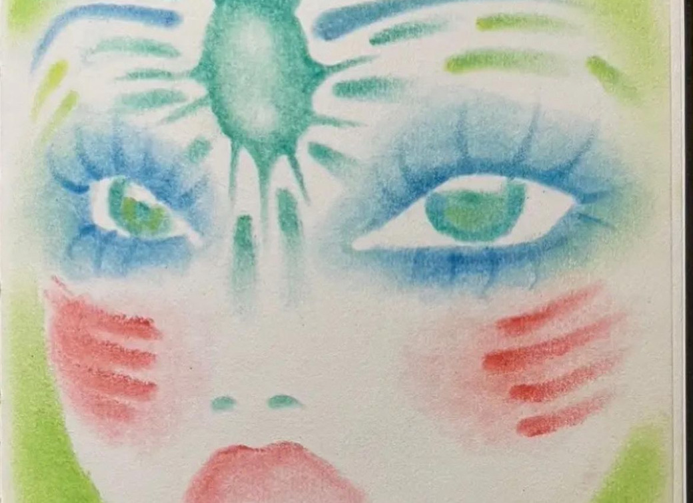
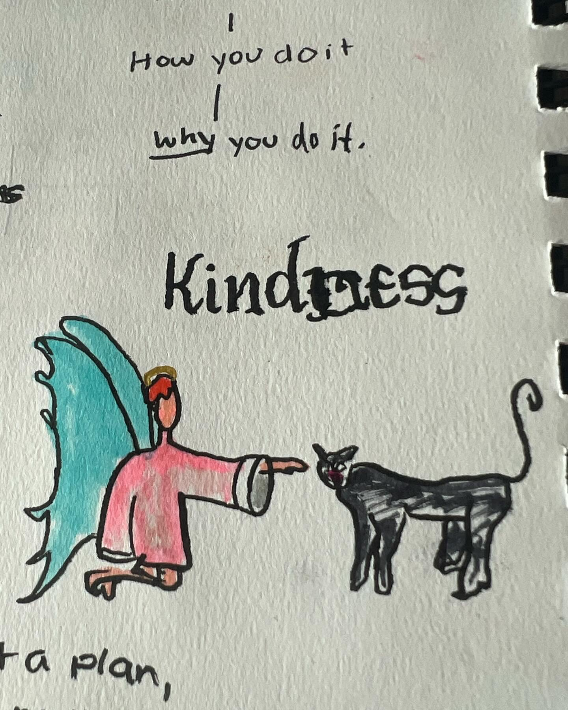
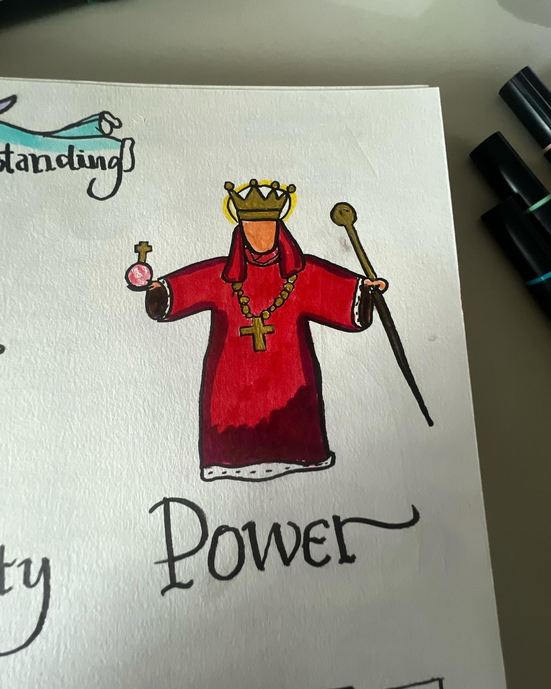
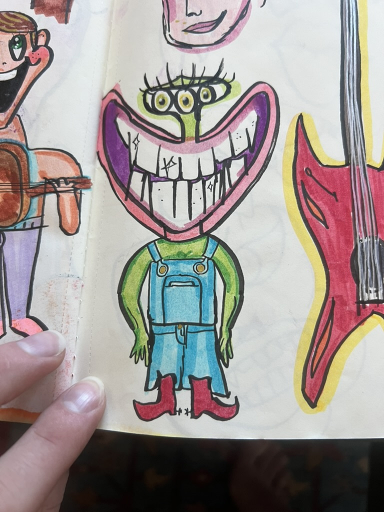
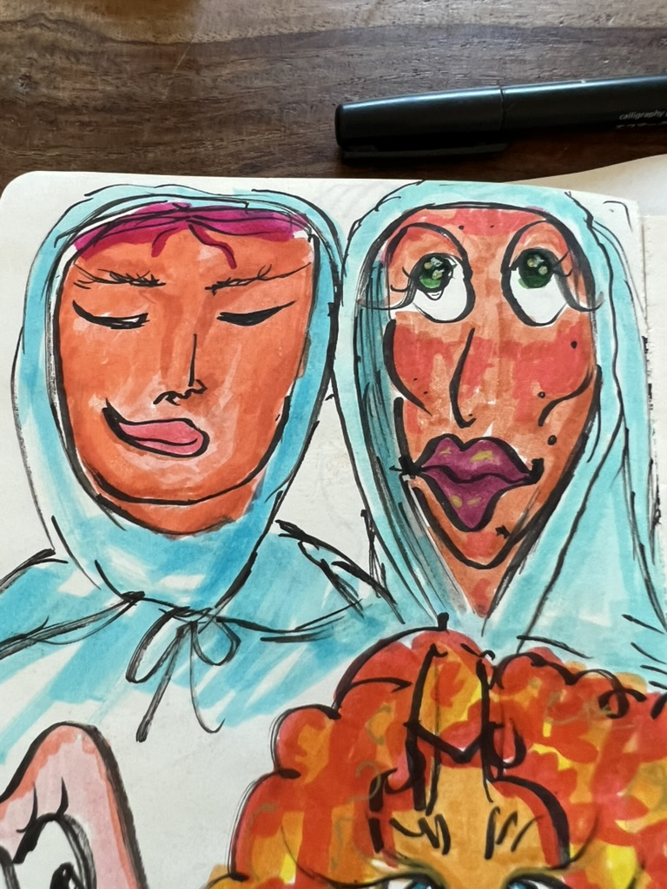
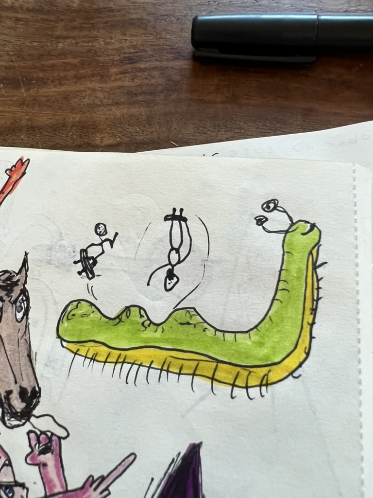
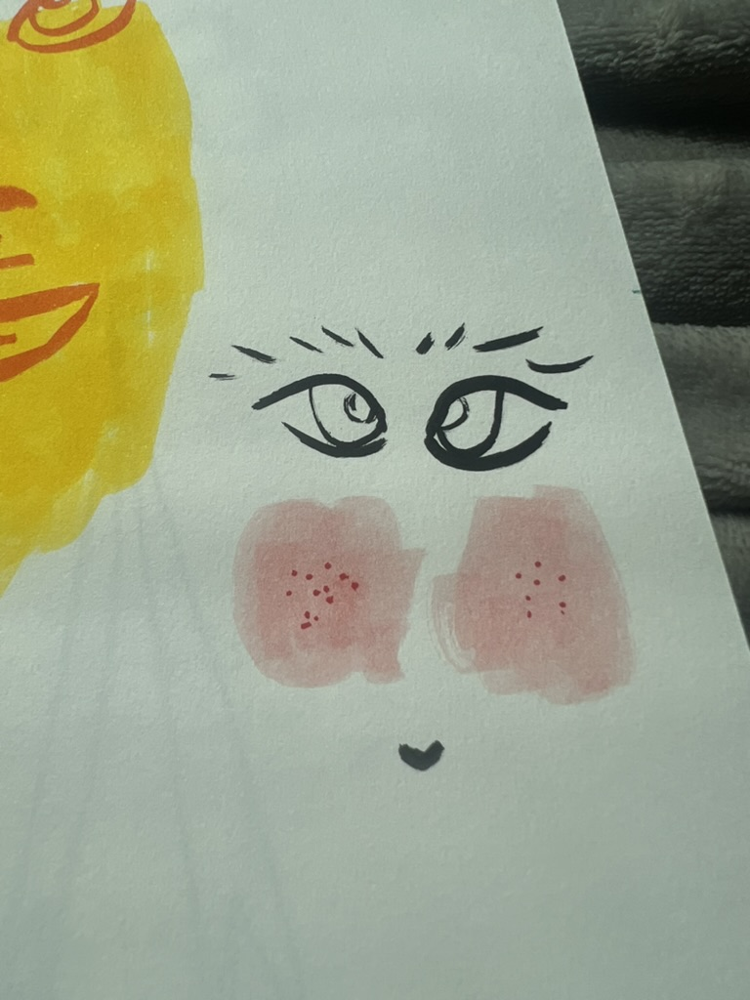
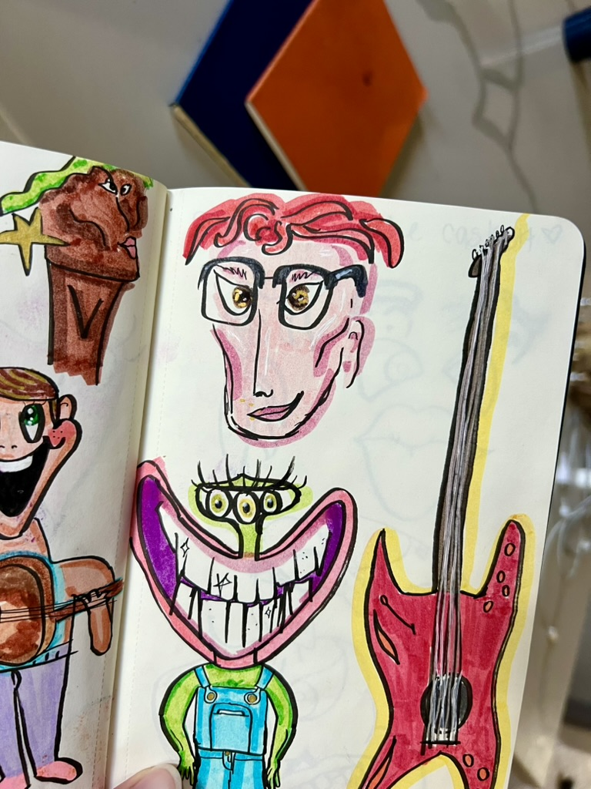
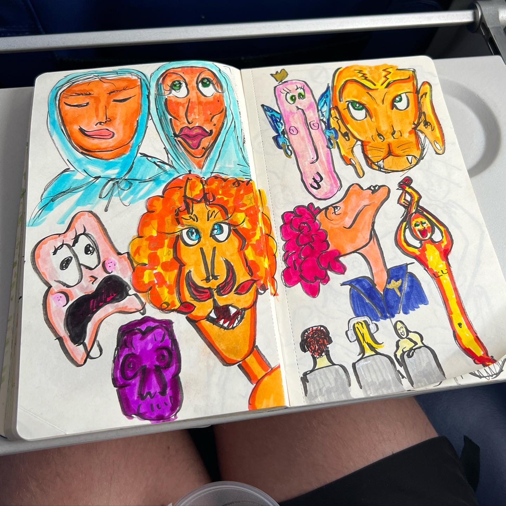
What I Use
- Copic and Prismacolor markers for color
- Black fineliner pen for outlines
- Regular sketchbooks — nothing fancy
- Watercolor sometimes for softer pieces
Styles I Draw In
| Style | Examples | How Often |
|---|---|---|
| Cartoon characters | Faces, figures, weird creatures | All the time |
| Lettering | Words as part of the drawing | Often |
| Watercolor portraits | Loose, colorful faces | Sometimes |